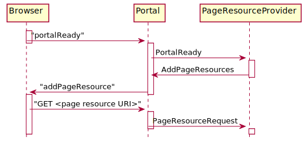

public class AddPageResources extends PortalCommand
Adds <link .../>, <style>...</style> or <script ...></script> nodes
to the portal’s <head> node.
Adding resource references causes the browser to issue GET request that
(usually) refer to resources that must be provided by the component
that created the AddPageResources event.
The sequence of events is shown in the diagram.

See ResourceRequest for details about the processing
of the PageResourceRequest.
The GET request may also, of course, refer to a resource from
another server.
Adding a <script src=...></script> node to a document’s <head>
causes the references JavaScript to be loaded asynchronously. This
can cause problems if an added library relies on another library
to be available. Script reosurces are therefore specified using
the AddPageResources.ScriptResource class, which allows to specify dependencies
between resource. The code in the browser delays the addition of
a <script> node until all other script resources that is depends
on are loaded.
| Modifier and Type | Class and Description |
|---|---|
static class |
AddPageResources.ScriptResource
Represents a script resource that is to be loaded or evaluated
by the browser.
|
| Constructor and Description |
|---|
AddPageResources() |
| Modifier and Type | Method and Description |
|---|---|
AddPageResources |
addCss(URI uri)
Add the URI of a CSS resource that is to be added to the
header section of the portal page.
|
AddPageResources |
addScriptResource(AddPageResources.ScriptResource scriptResource)
Add the URI of a JavaScript resource that is to be added to the
header section of the portal page.
|
String |
cssSource() |
URI[] |
cssUris()
Return all CSS URIs.
|
AddPageResources.ScriptResource[] |
scriptResources()
Return all script URIs
|
AddPageResources |
setCssSource(String cssSource) |
void |
toJson(Writer writer)
Writes the event as JSON notification to the given writer.
|
toJsonaddCompletionEvent, associated, cancel, channels, channels, completionEvents, currentResults, defaultCriterion, forChannels, get, get, handled, handlingError, isCancelled, isDone, isEligibleFor, isStopped, processedBy, results, results, setAssociated, setChannels, setRequiresResult, setResult, stop, tieTo, toStringpublic AddPageResources()
public AddPageResources addScriptResource(AddPageResources.ScriptResource scriptResource)
Add the URI of a JavaScript resource that is to be added to the header section of the portal page.
scriptResource - the resource to addpublic AddPageResources.ScriptResource[] scriptResources()
Return all script URIs
public AddPageResources addCss(URI uri)
Add the URI of a CSS resource that is to be added to the header section of the portal page.
uri - the URIpublic AddPageResources setCssSource(String cssSource)
cssSource - the cssSource to setpublic void toJson(Writer writer) throws IOException
PortalCommandWrites the event as JSON notification to the given writer.
Derived classes usually simply call
PortalCommand.toJson(Writer, String, Object...) with the method
name and parameters.
toJson in class PortalCommandwriter - the writerIOException